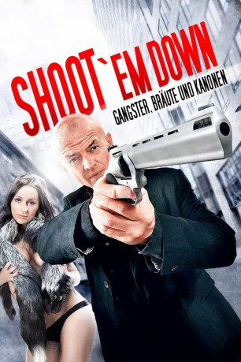

#8523 Shoot 'em Down
Alternativ: Zero 2
 
 IMDB-Wertung: 7.7 / 10
IMDB-Wertung: 7.7 / 10  Metascore: 0
Metascore: 0 
Die zwei Auftragskiller Max und Sylvester haben den Auftrag eine verloren gegangene Schiffsladung voller Drogen wieder zu beschaffen. Gar nicht so einfach, denn auf einmal herrscht Krieg auf den Strassen als die zwei größten Gangsterbosse um die Herrschaft des Landes kämpfen. Nebenbei werden sie von Killern gejagt, sollen noch einen entführten Lieferjungen retten, massenhaft Leute umbringen und Gangsterbräute beglücken. Und irgendwie spielen Silikontitten auch noch eine Rolle. Die wichtigste Regel in diesem Chaos lautet: verliere bloß nicht deine Nerven! Oder deine Eier…
Jahr: 2010
Dauer: 85 Minuten
FSK: 18
Land: Lithauen Studio: Sunfilm EntertainmentTonspuren:
Untertitel:
Auflösung: 1080p (1920x800) Größe: 6021 MB
Genre: Thriller, Komödie
Regisseur: Emilis Velyvis
Drehbuch: Jonas Banys
Soundtrack: Endless Happy
Darsteller:
 Mindaugas Papinigis als Vova
Mindaugas Papinigis als Vova- Donatas Simukauskas als Policeman
- Zemyna Asmontaite als Karolina
- Donatas Ivanauskas als Doncia
- Kestutis Stasys Jakstas als Silvestras
- Inga Jankauskaite als Lika
- Bronius Kindurys als Bronius
- Aurimas Meliesius als Vita's Husband
 Andrius Paulavicius als Zenka
Andrius Paulavicius als Zenka- Ramunas Rudokas als Maksas
- Vytautas Sapranauskas als Kesha
- Kristina Savickyte als Soap Opera Actress
- Laimutis Sedzius als Surgeon
- Saulis Siparis als Henka
- Audrone Sliuzaite als Clinic's Administrator
- Ausra Stukyte als Monika
- Emilis Velyvis als Henka's Man
- Liudvikas Vilimas als Gas Station Clerk
- Aldona Vilutyte als Monika's Friend
- Sonata Visockaite als Vita
- Andrius Ziurauskas als Aleksandras
Datei: X:\FSK18-2010\Shoot 'em Down (2010, FSK18, 1920x800).mkv seit 18.03.2018
Festplatte: FSK18
 Es gibt insgesamt 35 Filme in der Gruppe 'FSK18-2010'
Es gibt insgesamt 35 Filme in der Gruppe 'FSK18-2010'